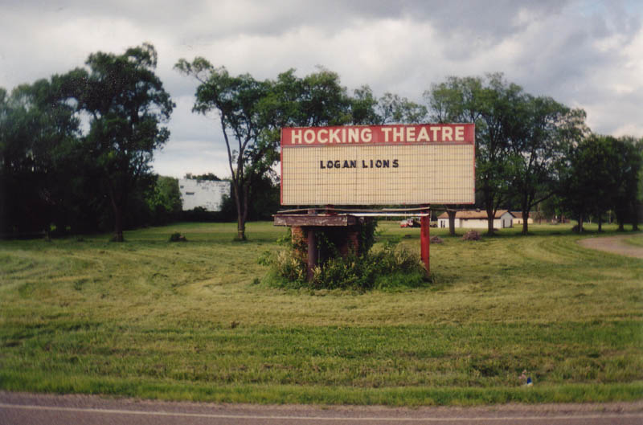
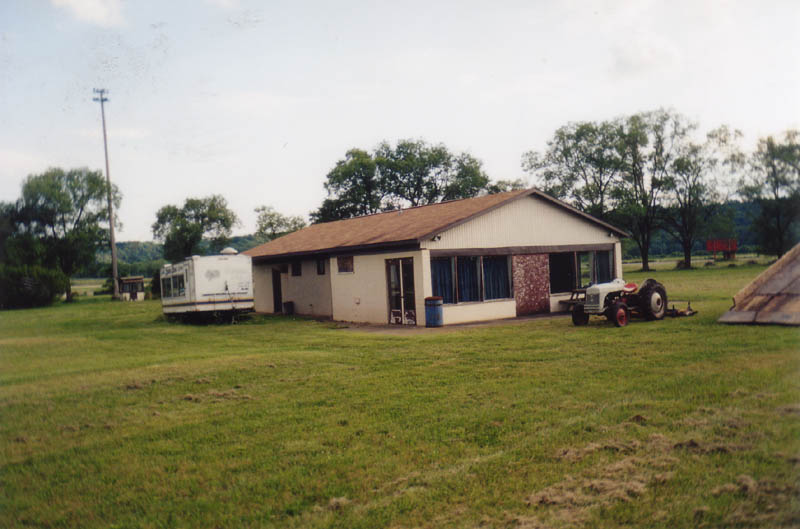
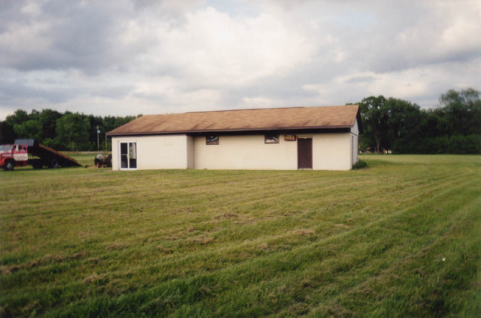
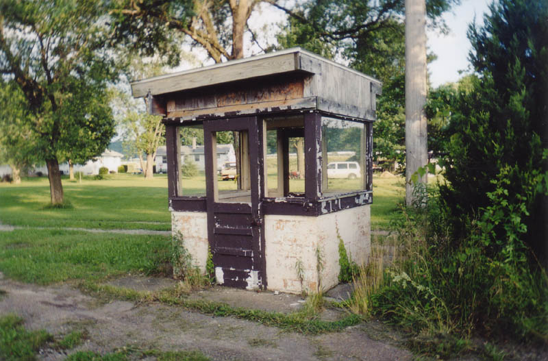
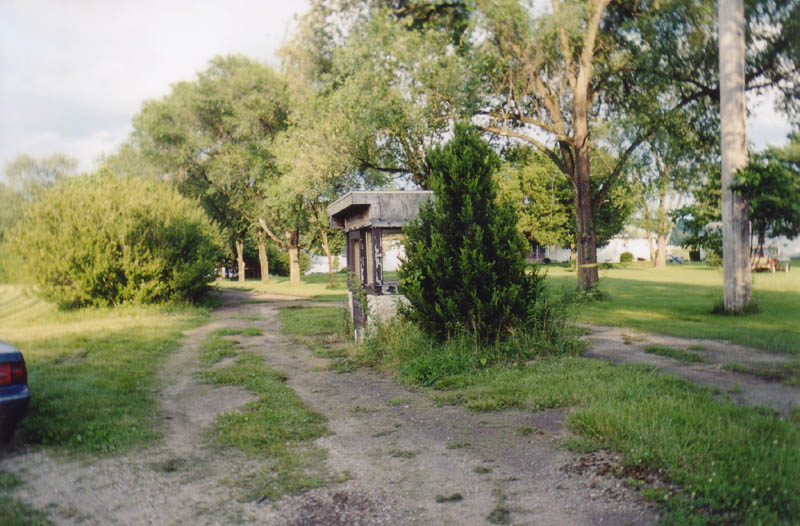
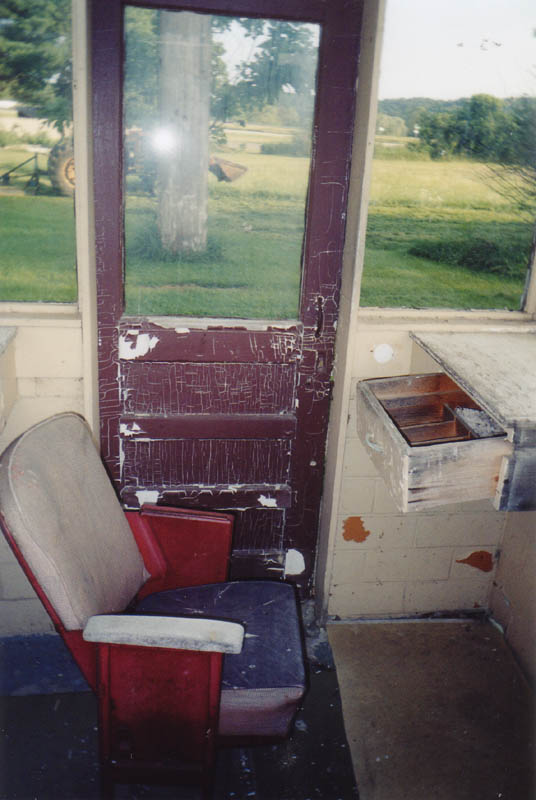
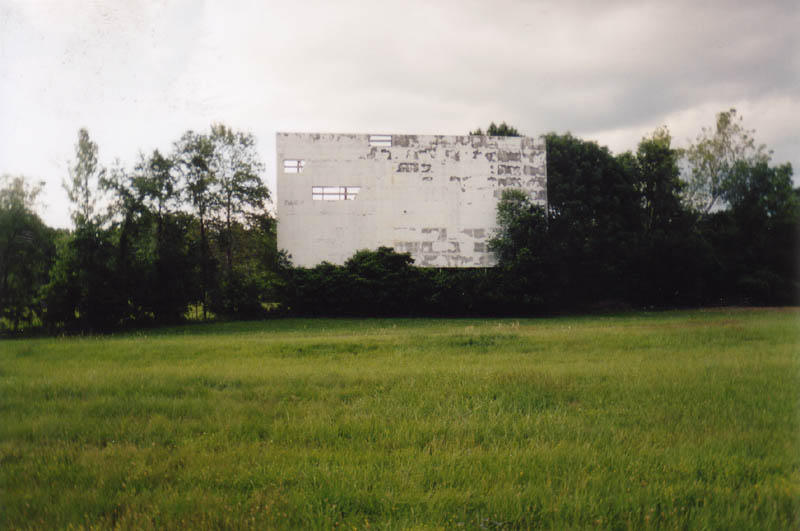
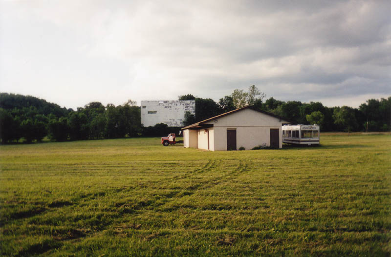
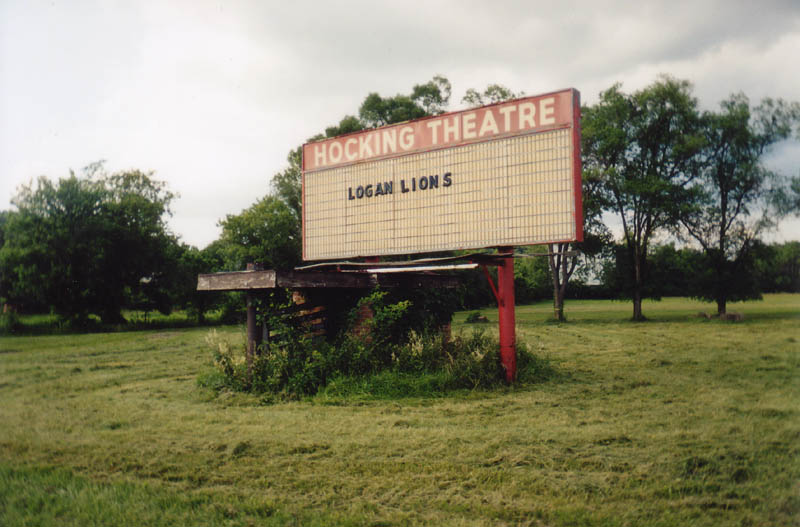
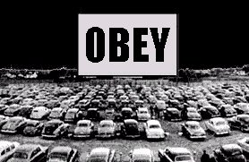

Like a thousand other defunct drive-ins, the Hocking Theater outside Logan is only still there because nobody seems to need to tear it down. Out in the country it's too much work to tear down the old screen and marquee, so the new owners just leave them up and let them fall down slowly. In this case the owners--the Logan Lions club--have put the concession stand to use as a storage shed.


As you can see, the Lions have used the land to store their club vehicles: a tractor and an unhitched concession vendors' trailer. You can still see the doors to the HIS and HERS restrooms. When we visited in the summer of 2003 there was somebody mowing the huge field while I took pictures.

When you first pull into the old movie theater driveway, the first thing you pass (besides the marquee) is the ticket booth. It's hidden behind an evergreen bush they don't bother to trim anymore, but the tracks where people used to pull up and pay are still worn by constant use.

The booth looks fairly all right from the outside--unpainted and missing its window glass--but inside it's surprisingly intact. Below you can see the movie theater seat, complete with armrests, where the box office person used to sit, as well as the old wooden money drawer.

The screen--a feature not always present in abandoned drive-ins--is still standing, peeling away to nothing at the back of the field.

They were halfway done mowing the field, which bears no resemblence to the parking lot it must once have been. The grass grows knee-high when they let it go. I can only assume it used to be gravel. I'm not sure whether there were speaker poles here or not; if so, there's certainly no sign left of them now. There is a very faint row pattern in the grass, but if you didn't know what you were looking for you wouldn't know it was there.

My best estimate for how long it's been since a movie played at the Hocking Theater keeps changing, being pushed up further and further. My ex-girlfriend Katydid's very nice aunt Patty, who grew up in Logan and remembers coming here on dates, says she saw Goldfinger here. Separate contributors remember seeing E.T. and Top Gun, while one guy remembers delivering concessions here for a food supply company as late as 1989. I was also informed that it showed midnight porno movies for a while, which caused lots of kids to twist their necks as their parents drove them by late at night.
The Hocking Theater Drive-In is located on the north/east side of State Route 33, at the 595 exit. Get off as you're heading southeast toward Nelsonville and turn left, and it's on the left just after you cross the highway bridge. The groundskeeper guy didn't mind us taking photos, but he did sit and watch us the whole time. Remember that they keep their stuff here, so it might be checked up on. But all in all I'd have to say it's a minor success story when it comes to Ohio drive-in preservation--no matter how inadvertant.

Ohio's Forgotten Drive-Ins
40 East Twin Drive-In
The Heath Drive-In
Hocking Theater Drive-In
Kingman Drive-In Theater
The Lake Drive-In
The Leatherwood Drive-In
The Linden Air Drive-In
The Show Boat Drive-In
The Skyline Drive-In

Back